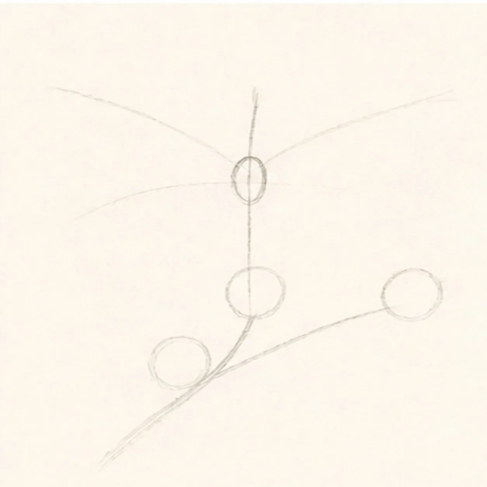
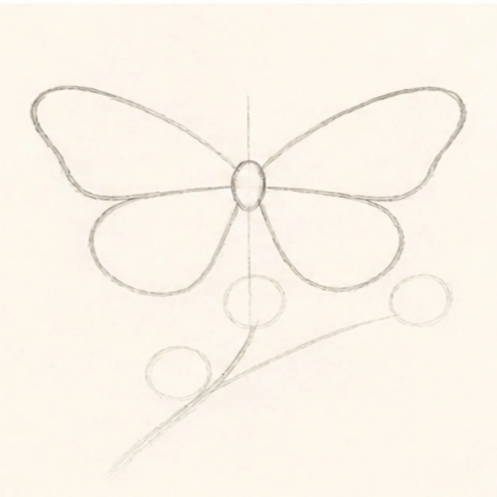
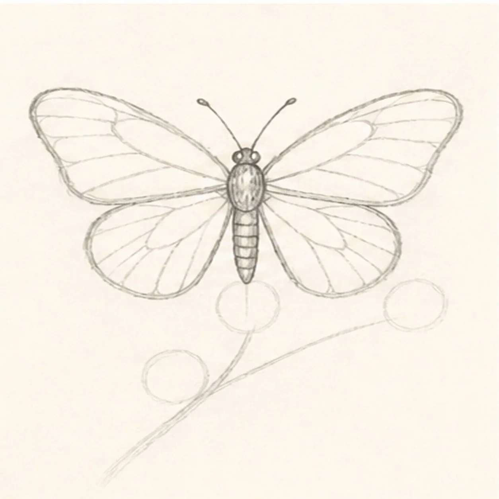
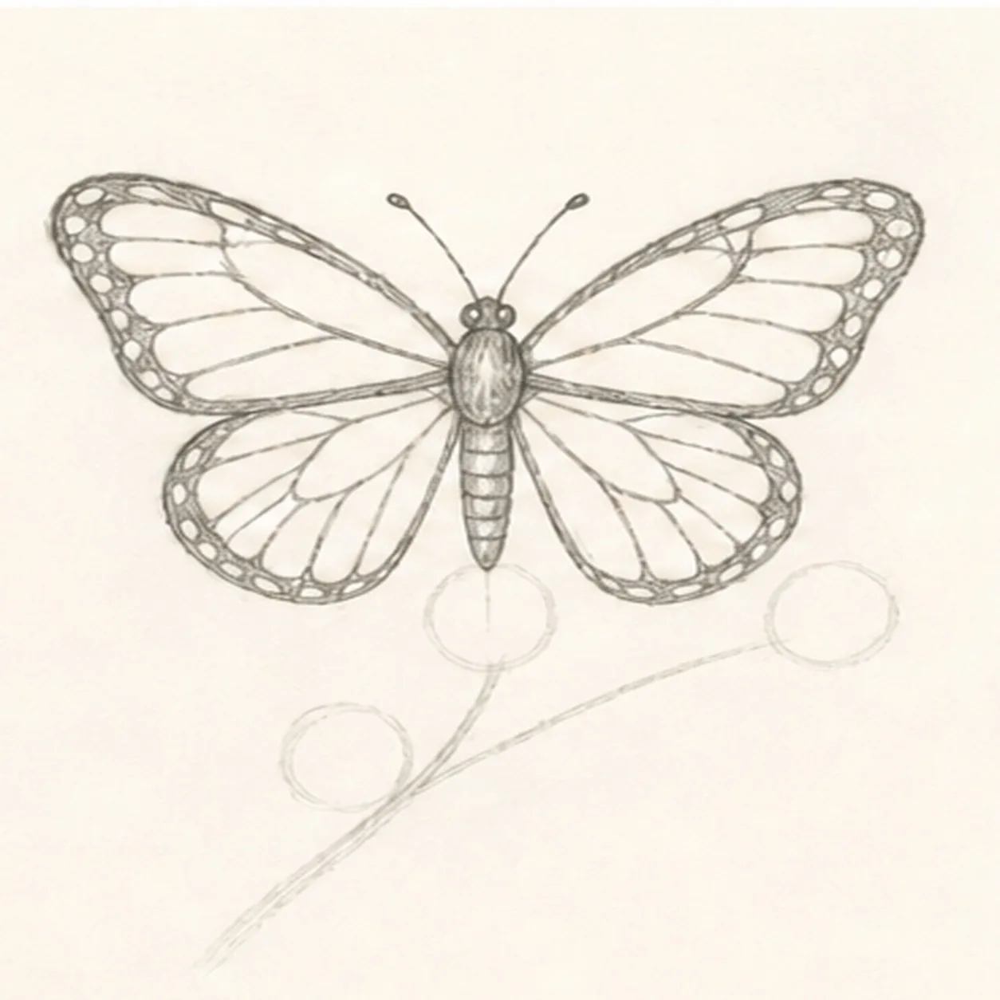
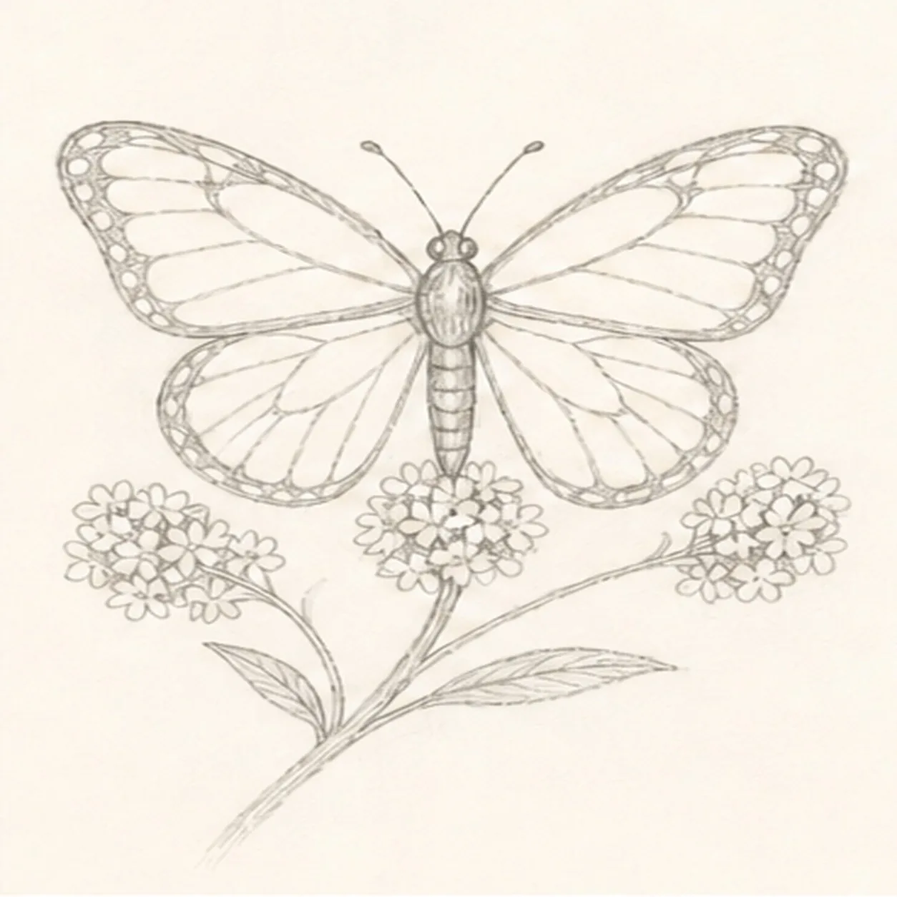
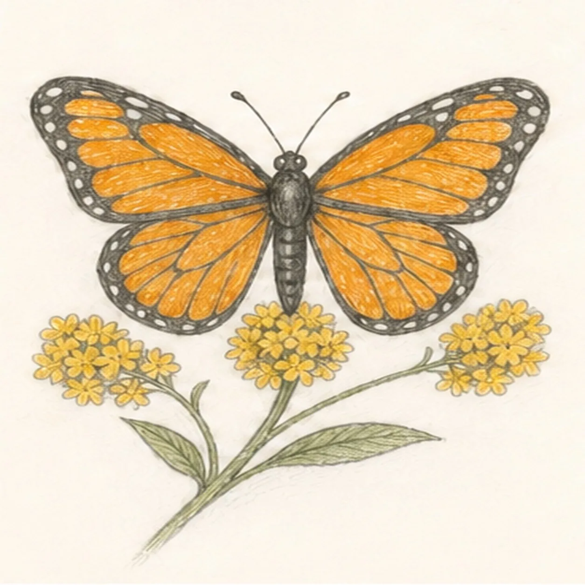
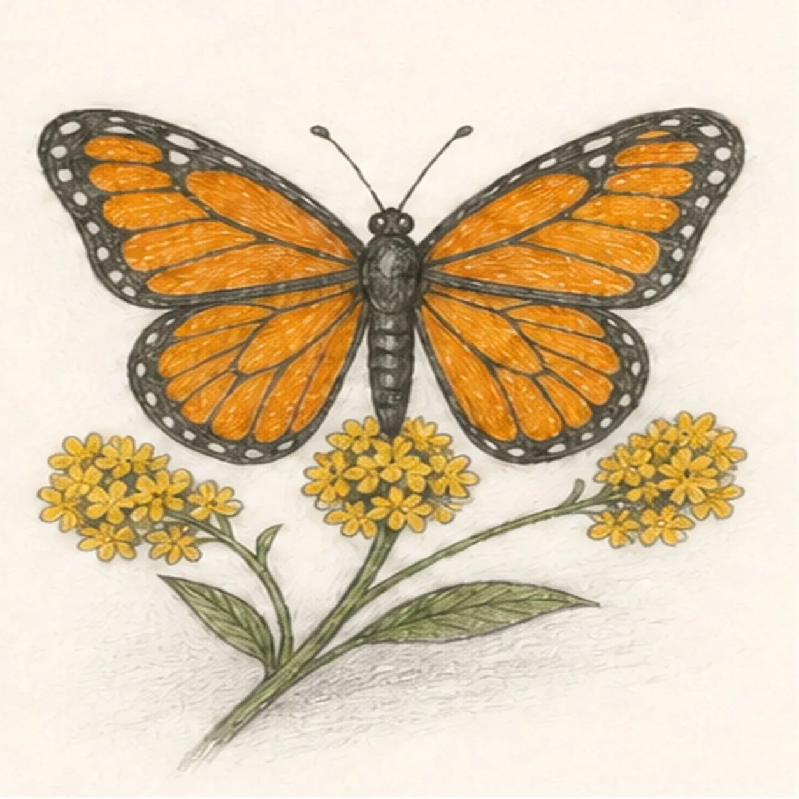

From the archive
Let's draw a monarch butterfly on goldenrod
Treat this as one small practice round: build the subject lightly, notice the shapes, then darken only the lines that help the finished sketch.
-
01

Set the flight symmetry
Use pale HB to place one vertical body axis, one small thorax oval, four open wing gestures, one diagonal stem route, and exactly three flower placement circles.
Sketch tip: Ghost each wing arc from the thorax before touching down. Compare the empty spaces on the left and right instead of trying to make the wings mechanically identical.
-
02

Shape all four wings
Connect the four gestures into exactly two broad forewings and two rounded hindwings without moving their attachment points.
Sketch tip: Rotate the page as you draw the outer curves. Check that both forewings reach higher than the hindwings and that all four still meet at the thorax.
-
03

Build the body and veins
Add one small head, the textured thorax, a tapered abdomen, exactly two antennae, and the main vein routes inside all four wings.
Sketch tip: Start every main vein at the body and let it fan outward. Keep the abdomen centered between the lower wings so the symmetry still reads at thumbnail size.
-
04

Map the monarch pattern
Divide the wings into broad monarch cells, dark border bands, and small pale edge-spot reserves.
Sketch tip: Treat the pattern as a map, not decoration. Leave the edge spots as open paper now so they stay crisp after the darker pencil layers arrive.
-
05

Grow the goldenrod spray
Turn the diagonal route and three placement circles into one branching stem with exactly three clustered flower heads and two narrow leaves.
Sketch tip: Build each flower cluster from a few grouped dots and tiny petal shapes. Stop the center cluster cleanly beneath the butterfly instead of drawing through its body.
-
06

Layer migration color
Add directional graphite and map orange and black-brown across the monarch, golden yellow across all three flower clusters, and muted green across the stem and two leaves.
Sketch tip: Pull colored-pencil strokes along each wing cell and leaf. Use lighter pressure near the paper highlights so the handmade texture stays visible.
-
07

Clarify flowers and texture
Clarify the established bloom dots, two leaf veins, wing texture, and the faint broken graphite suggestion beneath the spray without adding new forms.
Sketch tip: Squint at the drawing before darkening. The butterfly should remain the first shape you notice, with the goldenrod supporting rather than competing with it.
-
08

Finish the migrating monarch
Strengthen selected keeper contours, deepen the same mapped colors, and clarify only the existing edge spots, bloom dots, and highlights.
Sketch tip: Count four wings, two antennae, three flower clusters, and two leaves, then stop while the paper tooth still breaks through the color.
![Handmade graphite and restrained colored-pencil sketch of one left-facing muted-ochre seahorse with one horse-like head and long snout, one three-point crown ridge, one visible eye, one arched neck and rounded belly, one tapering clockwise-curled tail wrapped exactly once around one teal-green eelgrass stem, one ribbed dorsal fin, exactly two small side fins, exactly seven curved torso plates, exactly five narrow eelgrass leaves, exactly two pale-blue bubbles, exactly two open-paper highlights, visible paper tooth, and one broken cool-gray ground shadow](../assets/seahorse-curled-around-eelgrass-finished-v1.webp)